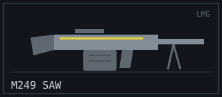
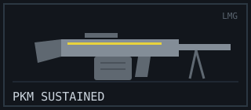
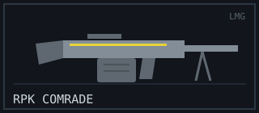
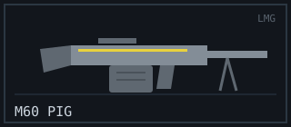

LMG
Role: Suppression & Area Denial
Light machine guns don't win the quick duel — they win the war of attrition. Enormous belt-fed magazines let you hold a lane, saturate a chokepoint, and keep an entire team pinned while your squad rotates. The trade is weight: slow to aim, slow to reload, and punishing to anyone caught reloading at the wrong moment.
Arsenal Comparison
| Weapon | Damage | Fire Rate (RPM) | Magazine | Reload (s) | Range (m) | Recoil (1–10) | Price ($) |
|---|---|---|---|---|---|---|---|
| M249 “SAW” | 32 | 800 | 100 | 5.2 | 55 | 6 | 5200 |
| PKM “Sustained” | 40 | 650 | 100 | 6.0 | 60 | 8 | 5000 |
| RPK “Comrade” | 38 | 600 | 75 | 4.5 | 58 | 6 | 4600 |
| M60 “Pig” | 43 | 550 | 100 | 6.5 | 62 | 9 | 5400 |
Weapon Files
M249 “SAW”

Combat Stats
- Fire Mode: Full-automatic (belt-fed)
- Ammo Type: 5.56mm
- Wall Penetration: Medium
- Mobility: 82%
Description / Lore
The squad automatic weapon that gives the category its job description. A 100-round belt and a soft recoil curve let you simply hold the trigger and paint a lane until nobody dares cross it. Not the hardest hitter, but the easiest LMG to keep on target.
Unlock Requirement
Available by default — Variant “Sandstorm” unlocks at 500 LMG kills.
PKM “Sustained”

Combat Stats
- Fire Mode: Full-automatic (belt-fed)
- Ammo Type: 7.62mm
- Wall Penetration: High
- Mobility: 80%
Description / Lore
Bigger rounds, bigger bite. The Sustained chews through cover and drops targets in fewer hits than the SAW, at the cost of a heavier kick that walks the sights skyward on long bursts. Anchor a position with it and the enemy stops advancing.
Unlock Requirement
Reach Account Level 26 — Variant “Iron Curtain” at 60 suppression assists.
RPK “Comrade”

Combat Stats
- Fire Mode: Full-automatic
- Ammo Type: 7.62mm
- Wall Penetration: High
- Mobility: 84%
Description / Lore
The LMG that thinks it's a rifle. A lighter 75-round magazine and the quickest reload on the rack make the Comrade far more mobile than its siblings — the pick for players who want machine-gun volume without being bolted to one spot.
Unlock Requirement
Score 30 kills while moving — Variant “Vanguard” at Level 32.
M60 “Pig”

Combat Stats
- Fire Mode: Full-automatic (belt-fed, open bolt)
- Ammo Type: 7.62mm
- Wall Penetration: High
- Mobility: 78%
Description / Lore
The heaviest hitter in the whole armory. Every round from the Pig lands like a sledgehammer, and its 100-round belt can wipe a stacked push single-handed. The price is brutal weight and a marathon reload — get caught empty and you are finished.
Unlock Requirement
Earn 50 machine-gun multi-kills — Variant “Warhog” at Level 40.
Signature Showcase — M60 Pig
Field footage: the gas-operated, belt-fed action of the M60 in 3D.
External Intel
- Reference: Light machine gun (Wikipedia)
- Showcase video: How an M60 machine gun works (YouTube)